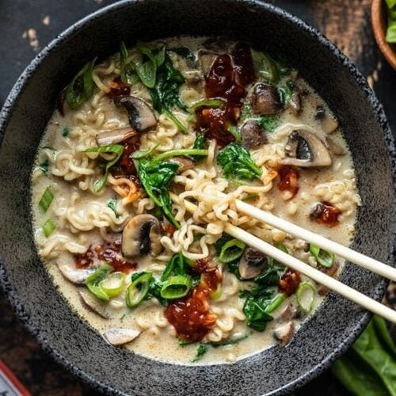

Ramen

Description
I hope I’ve convinced you to experiment
with leftovers in your fridge by now.
Most of my favorite recipe creations have
come from me just piling whatever I have
leftover in my fridge into a bowl or pot,
and seeing how it turns out, including
this Vegan Creamy Mushroom Ramen. I’m not
kidding when I say this is one of the best
things I’ve ever tasted, and it only takes
about 15 minutes and a handful of
ingredients. #totalwin
Ingredients
- 1/2 Tbsp cooking oil
- 4 oz. baby bella mushrooms
- 1.5 cups vegetable broth
- 1 handful fresh spinach
- 1 package ramen noodles (discard seasoning)
- 1/2 cup coconut milk (canned)
Steps
- Slice the mushrooms. Add them to a small
sauce pot with the cooking oil and sauté
over medium heat until the mushrooms are
soft, dark, and all the moisture in the
bottom of the pot has evaporated.
- Add the vegetable broth, turn the heat up
to medium-high, and bring the broth up to
a boil. Once boiling, add the ramen noodles
(without the seasoning packet) to the broth.
Cook the noodles in the boiling broth for
about 3 minutes, or until tender.
- Turn the heat off, add a heaping handful of
fresh spinach, and stir until the spinach is
wilted (about 30 seconds). Pour the coconut
milk into the pot and stir to combine.
- Serve the Vegan Creamy Coconut Ramen as-is,
or with garnishes like green onion or chili
garlic sauce.
Check out more recipes here!